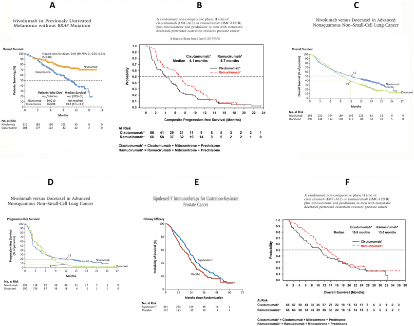

This class is being conducted in person, as well as over Zoom. As the instructor, I will be recording this session. I have disabled the recording feature for others so that no one else will be able to record this session. I will be posting this session to the course’s website.
If you have privacy concerns and do not wish to appear in the recording, you may turn video off (click “stop video”) so that Zoom does not record you.
The chat box is always open for discussion and questions to the entire class. You may also send messages privately to the instructor. Please note that Zoom saves all chat transcripts.
Estimating \(S(t)\) without a probability distribution (non-parametrically)
When we don’t have censoring
When we do have censoring
Confidence intervals for \(S(t)\)
Survival curves
Logrank tests: testing difference between survival curves
Recap: Time-to-event data
Last time we introduced the idea of time-to-event data, which is characterized by:
Whether an individual experience an event
If yes, the time that event happened
If no, how long were they observed for
The presence of censoring
We also discussed how to measure time to an event:
Time origin: time to event from when the “research question” clock starts
Entry to study: time to event from when someone first enters your study
Recap: Describing time-to-event data
We also talked about the ways we can describe survival time
The survival function\(S(t) = P(T>t)\): the probability that a event happens after time \(t\)
The hazard function\(\lambda(t) = \lambda(t) = \lim_{\delta \rightarrow 0} \frac{P(t\le T < t + \delta | T \ge t)}{\delta}\): the instantaneous rate of an event happening
The cumulative hazard function\(\Lambda(t) = \int_0^t \lambda(u) du\): the rate of event occurrence over a period of time
Recap: Describing time-to-event data
We noted that we could assume that the survival time \(T\) follows a probability distribution, and use that assumption to calculate \(S(t)\), \(\lambda(t)\), and \(\Lambda(t)\)
We specifically looked at the exponential and Weibull distributions
However, if our assumption about the distribution is incorrect, this can lead to a biased and inconsistent estimate of \(S(t)\)
This is bad because \(S(t)\) is the main things we’re trying to estimate in survival analysis!
Because of this, we want to try to estimate \(S(t)\) in a non-parametric way…
Estimating \(S(t)\)
Using this data, how would we estimate \(S(t) = P(T>t)\) at t=1 and t=2?
\(P(T>1) = \frac{\text{# alive at 1 year}}{\text{# "at risk"}}=\)\(8/10=0.8\)
What about \(P(T>2)\)?
We could use the “full” sample and look at \(\frac{\text{# with no event at 2 year}}{\text{# "at risk" since time 0}}\)
Or we could use a “reduced” sample that only looks at \(\frac{\text{# alive past 2 year}}{\text{# with complete data at 2 years}}\)
P(T>1)
P(T>2)
“Full” sample
8/10 = 0.8
6/10 = 0.6
(too high)
“Reduced” sample
8/10 = 0.8
4/8 = 0.5
(too variable)
The “full” sample takes anyone who was censored and carries their last observation forward
The “reduced” sample ignores anyone who dropped out
Estimating \(S(t)\)
Alternatively, we could also use conditional probability!
\[\begin{align*}P(T>2) &= P(T>2 | T>1) \times P(T>1)\\
&=\frac{\text{# alive past 2 years}}{\text{# observed > 2 years, alive at 1 year}}\\
&~~~~~~~\times \frac{\text{# alive at 1 year}}{\text{# observed at 1 year}}\\
&= \frac{4}{6} \times \frac{8}{10}\\
&= 0.53\end{align*}\]
Compared to:
P(T>1)
P(T>2)
“Full” sample
8/10 = 0.8
6/10 = 0.6
(too high)
“Reduced” sample
8/10 = 0.8
4/8 = 0.5
(too variable)
Life table estimates
But what happens when we have censoring?
Consider some data from the 6-MP leukemia trial we discussed in lecture 10.1
The essential data are the 21 ordered times (in months) to relapse or censoring (time with “+” next to it): 6, 6, 6, 7, 10, 13, 16, 22, 23, 6+, 9+, 10+, 11+, 17+, 19+, 20+, 25+, 32+, 32+, 34+, 35+
We can organize these times into intervals:
Interval
Beginning total
# lost
# relapsed
(0 - 5]
21
0
0
(5 - 10]
21
3
5
(10 - 15]
13
1
1
(15 - 20]
11
3
1
(20 - 25]
7
1
2
(25 - 30]
4
0
0
(30 - 35]
4
4
0
How do we account for censoring when estimating \(S(t)\)?
Kaplan-Meier estimator of \(S(t)\)
The Kaplan-Meier estimator of \(S(t)\) considers the probability of survival a (very small) interval of time, given that an individual is at risk at the beginning of the interval
Say we have \(D\) total event times in a sample, and we can put them in order: \(t_1 < t_2 < \dots < t_D\)
\(d_i\): total number of events at time \(t_i\)
\(s_i\): total number who haven’t failed by time \(t_i\)
\(Y_i\): total number at risk at time \(t_i\) (under observation, not failed)
Total number of events at time \(t_i\) is equal to total number at risk minus those who haven’t failed \[d_i = Y_i - s_i\]
KM estimator
The KM estimator calculates a conditional survival probability for each time interval in which only 1 event occurs, and then multiplies them together:
We can just focus on the intervals where an event occurs because if the interval contains no event, the conditional surivival probability is approximately 1
Example: 6-MP
Back to our 6-MP example, with event and censoring times: 6, 6, 6, 7, 10, 13, 16, 22, 23, 6+, 9+, 10+, 11+, 17+, 19+, 20+, 25+, 32+, 32+, 34+, 35+
\(t_i\)
\(d_i\)
\(Y_i\)
\(\widehat{S}_{KM}(t)\)
6
3
21
\(1-\frac{3}{21}=0.857\)
7
1
17
\(0.857(1-\frac{1}{17})=0.807\)
10
1
15
\(0.807(1-\frac{1}{15})=0.753\)
13
1
12
\(0.753(1-\frac{1}{12})=0.690\)
16
1
11
\(0.690(1-\frac{1}{11})=0.628\)
22
1
7
\(0.628(1-\frac{1}{7})=0.538\)
23
1
6
\(0.538(1-\frac{1}{16})=0.448\)
Example: 6-MP
If we were to wite our KM estimates in the style of a life table (which shows survival probabilities over intervals), this would look like:
\(t\)
\(\widehat{S}_{KM}(t)\)
[0 - 6)
0.857
[6 - 7)
0.807
[7 - 10)
0.753
[10 - 13)
0.690
[13 - 16)
0.628
[16 - 22)
0.538
[22 - 23)
0.448
We’ve estimated the survival function, but maybe we’d also like some confidence intervals around this probability…
KM confidence intervals
\(d_i\): total number of events at time \(t_i\); \(Y_i\): total number at risk at time \(t_i\) (under observation, not failed)
We can also estimate the variance and standard error of the KM estimator by:
This means we can construct \((1-\alpha)\times 100\)% confidence intervals for \(S(t)\): \[\widehat{S}_{KM}(t) \pm Z_{1-\alpha/2} \times \widehat{SE}_{KM}(t)\]
This formulation of a confidence interval for \(S(t)\) could produce upper and lower bounds outside of [0,1]
\(S(t)\) is a probability, so this is a problem!
KM confidence intervals
One way to avoid this is by using the complementary log-log transformation
Recall that the cumulative hazard function \(\Lambda(t)=-\log S(t)\)
So, the complementary log-log transformation looks at the log of the cumulative hazard:
Next we’ll build a confidence interval for \(\log\left[\widehat\Lambda(t)\right]\) first, and then we’ll back-transform it to get the interval for \(\widehat{S}(t)\)
The variance for \(\log\left[\widehat{\Lambda}(t)\right]\) is: \[Var\left[\log\left[\widehat{\Lambda}(t)\right]\right] = \frac{Var\left[\widehat S(t)\right]}{\left(\widehat S(t) \log\left[\widehat S(t)\right]\right)^2}\]
This means the confidence interval for \(\log\left[\widehat{\Lambda}(t)\right]\) is: \[\log\left[\widehat \Lambda(t)\right] \pm Z_{1-\alpha/2} \times \sqrt{ Var\left[\widehat S(t)\right]/\left(\widehat S(t) \log\left[\widehat S(t)\right]\right)^2} \Rightarrow\log\left[\widehat \Lambda(t)\right] \pm Z_{1-\alpha/2} \times \widehat{SE}_{\Lambda}(t)\]
This means the confidence interval for \(\log\left[\widehat{\Lambda}(t)\right]\) is: \[\log\left[\widehat \Lambda(t)\right] \pm Z_{1-\alpha/2} \times \sqrt{ Var\left[\widehat S(t)\right]/\left(\widehat S(t) \log\left[\widehat S(t)\right]\right)^2 } \Rightarrow\log\left[\widehat \Lambda(t)\right] \pm Z_{1-\alpha/2} \times \widehat{SE}_{\Lambda}(t)\]
If we use \(\widehat S_{KM}(t)\) for every \(\widehat S(t)\), and back-transform the above to be a confidence interval around \(\widehat S_{KM}(t)\), we would get: \[\left(\widehat S_{KM}(t)^{\exp\left\{Z_{1-\alpha/2} \times \widehat{SE}_{\Lambda}(t)\right\}}, ~ \widehat S_{KM}(t)^{\exp\left\{-Z_{1-\alpha/2} \times \widehat{SE}_{\Lambda}(t)\right\}}\right)\]
Nelson-Aalen estimator of \(\Lambda(t)\)
We can also use the KM estimator \(\widehat{S}_{KM}(t)\) to get an estimate of the cumulative hazard function: \[\widehat{\Lambda}_{KM}(t) = -\log\left[\widehat{S}_{KM}(t)\right]\]
But this estimator can perform poorly when the sample size is small
An alternative estimator of \(\Lambda(t)\) is what we call the Nelson-Aalen estimator:
This means we can construct \((1-\alpha)\times 100\)% confidence intervals for \(\Lambda(t)\): \[\tilde{\Lambda}_{NA}(t) \pm Z_{1-\alpha/2} \times \widehat{SE}_{NA}(t)\]
Using the NA estimator of \(\Lambda(t)\), we can also construct an alternative estimator of the survival function, which we call the Breslow estimator: \[\tilde{S}_{B}(t) = e^{-\tilde{\Lambda}_{NA}(t)}\]
Comparing the KM and NA estimates in a life table would look like:
Survival Functions
Cumulative Hazards
\(\boldsymbol{t}\)
\(\boldsymbol{\widehat{S}_{KM}(t)}\)
\(\boldsymbol{\tilde S_{B}(t)}\)
\(\boldsymbol{\widehat\Lambda_{KM}(t)}\)
\(\boldsymbol{\tilde\Lambda_{NA}(t)}\)
[0 - 6)
0.857
0.887
0.154
0.143
[6 - 7)
0.807
0.817
0.214
0.202
[7 - 10)
0.753
0.765
0.284
0.268
[10 - 13)
0.690
0.704
0.371
0.352
[13 - 16)
0.628
0.342
0.465
0.443
[16 - 22)
0.538
0.557
0.620
0.585
[22 - 23)
0.448
0.471
0.803
0.752
Survival curves
We’ve estimated all these survival probabilities but what do we… do with them?
We could do like we’ve been doing and put them in a table and track how the probabilities change with time
… but that can get complicated quickly, and it’s not very easy to compare how the probabilities change across multiple groups
Solution: plot the probabilities as curves!
Example: 6-MP
An example of a survival curve for the 6-MP data, using a KM estimator for the survival function
km.6mp <-survfit( Surv(t2, relapse) ~1, data=drug6mp )plot(km.6mp, mark.time=T, xlab="Months since study start", ylab="Survival")
Comparing survival curves
If we would like to formally compare the survival functions for multiple groups, we can perform a statistical test
\[\begin{align*}&H_0: S_1(t) = S_2(t) \text{ for all } t\\
&H_1: S_1(t) \ne S_2(t) \text{ for at least one } t\end{align*}\]
Let \(t_1 < t_2 < \dots < t_D\) denote the distinct event times in the overall sample
At time \(t_i\), we observe:
\(d_{1i}\) events from the \(Y_{1i}\) subjects at risk in the first group
\(d_{2i}\) events from the \(Y_{2i}\) subjects at risk in the second group
\(d_i = d_{1i} + d_{2i}\) events from the \(U_i = Y_{1i} + Y_{2i}\) subjects at risk in the two groups combined
Comparing survival curves
We can then make a contingency table for events and non-events at time \(t_i\):
Under the null hypothesis \(H_0\), every subject at risk at time \(t_i\) has the same probability of experiencing an event at time \(t_i\) regardless of group
Under \(H_0\):
the expected number of subjects in group 1 who experience an event at time \(t_i\) is \(E_{1i} = E[d_{1i}] = d_i \frac{Y_{1i}}{Y_i}\)
the variance is \(V_{1i} = Var[d_{1i}] = d_i \times \frac{Y_{1i}}{Y_i}\times\frac{Y_{2i}}{Y_i}\times\frac{Y_i - d_i}{Y_i - 1}\)
Logrank tests
We can use \(d_{1i}\), \(E_{1i}\), \(V_{1i}\), and a weight function \(W(t_i)\) to construct a weighted test statistic:
We can compare this test statistic to a standard Normal distribution to determine whether we should reject \(H_0\)
If we reject, this means that we have evidence that people in group 1 do not have the same probability of experiencing an event at time \(t_i\) as the people in group 2!
Proportional hazards
The logrank test is most powerful when the alternative looks at a hazard for group 2 that is different but proportional to the group 1 hazard: \(\lambda_2(t) = \alpha \lambda_1(t)\)
Can also rewrite this in terms of survival functions: \(S_2(t) = S_1(t)^\alpha\)
Proportional hazards
The logrank test is most powerful when the alternative looks at a hazard for group 2 that is different but proportional to the group 1 hazard: \(\lambda_2(t) = \alpha \lambda_1(t)\)
Can also rewrite this in terms of survival functions: \(S_2(t) = S_1(t)^\alpha\)
Or in terms of the log cumulative hazards: \(\log[\Lambda_2(t)] = \log[\alpha] + \log[\Lambda_1(t)]\)
This means that the logrank test will be most powerful if the log cumulative hazards are (roughly) parallel
Call:
survdiff(formula = Surv(time, relapse) ~ sixmp, data = drug6mp_long)
N Observed Expected (O-E)^2/E (O-E)^2/V
sixmp=0 21 21 10.7 9.77 16.8
sixmp=1 21 9 19.3 5.46 16.8
Chisq= 16.8 on 1 degrees of freedom, p= 4e-05
A chi-squared test statistic of 16.8 (\(Z=4.1\)) with a p-value of 0.00004… probably pretty different!
Can conclude that 6-MP treatment group has higher relapse-free survival than placebo
AKA: higher probability that the treatment group’s relapse time is greater that some time \(t\) compared to the placebo group
AKA: treatment group takes longer to experience relapse, on average, compared to the placebo group
Weighted logrank tests
While the logrank test will still work work under non-proportional hazards, we might want to choose a different weight function \(W(t_i)\) that would allow us to weight differences in the observed and expected number of events (\(d_{1i} - E_{1i}\)) differently over time
Gehan-Breslow weights: \(W(t_i) = Y_i\) applies more weight to early failure times
Generalized Wilcoxon weights: \(W(t_i) = \widehat{S}_{KM}(t_k-) = \prod_{t_i \le t}\left[1-\frac{d_i}{Y_i + 1}\right]\) also applies greater weight to early failure times
\(p=1\), \(q=0\) gives the generalized Wilcoxon logrank statistic (weight to early failures)
\(p=0\), \(q=1\) gives more weight to late failure times
No objectively “correct” choice for weights – it depends on whether early or late events are more important in your research context
Non-proportional hazards

Figure from “Treating non-responders: Pitfalls and implications for cancer immunotherapy trial design” by Xu, Park, Liu, & Zhu (2020)
Whether you care about early success or late success depends on your health context!
Take home messages
Can be hard to know that we’re right about our assumed probability distribution for survival time
In that case, it’s good to estimate the survival function \(S(t)\) using non-parametric methods
The Kaplan-Meier estimator \(\widehat S_{KM}(t)\) is usually the default
The Nelson Aalen estimator of the cumulative hazard \(\tilde\Lambda_{NA}(t)\) and it’s equivalent Breslow estimator of the surivival function \(\widehat S_B(t)\) work well with small sample sizes
We can plot the survival function as a curve over time, and we can compare whether curves for different groups differ by using a logrank test
We can use a weighted logrank test when we have non-proportional hazards, but we need to choose whether we care more about differences between early or late failures